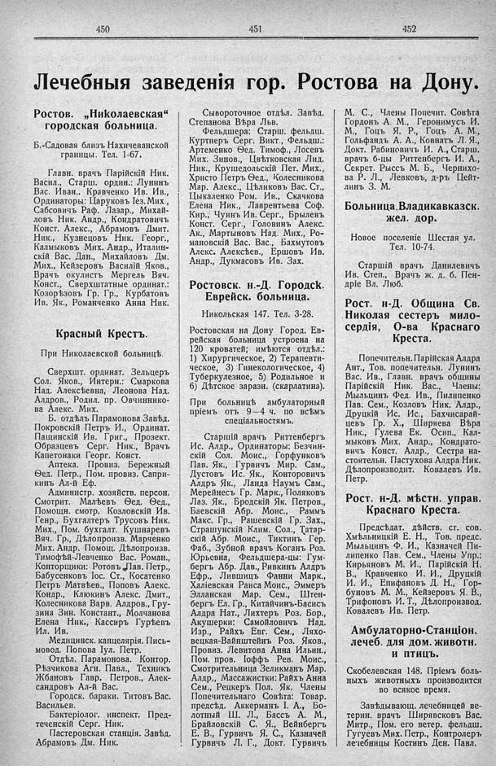

Лист источника 282
Скан

Распознанный текст
450
451
452
Лечебныя заведенія гор. Ростова на Дону.
Ростов. „Николаевская“
городская больница.
Б.-Садовая близъ Нахичеванской
границы. Тел. 1-67.
Главн. врачъ Парійскій Ник.
Васил., Старш. ордин.: Лунинъ
Вас. Иван.. Кравченко Ив. Ив.,
Ординаторы: Царуковъ Іез. Мих.,
Сабсовичъ Раф. Лазар., Михай-
ловъ Ник. Андр., Кондратовичъ
Конст. Алекс., Абрамовъ Дмит.
Ник., Кузнецовъ Ник. Георг.,
Калмыковъ Мих. Андр., Италин-
скій Вас. Дан., Михайловъ Дм.
Мих., Кейзеровъ Василій Яков.,
Врачъ окулистъ Мергель Вяч.
Конст., Сверхштатные ординат.:
Козорѣзовъ Гр. Гр., Курбатовъ
Ив. Як., Романченко Анна Ник.
Красный Крестъ.
При Николаевской больницѣ.
Сверхшт. ординат. Зельцеръ
Сол. Яков., Интерн.: Смаркова
Над. Алексѣевна, Леонова Над.
Алдров., Родил. пр. Овчиннико-
ва Алекс. Мих.
Б. отдѣлъ Парамонова Завѣд.
Покровскій Петръ И., Ординат.
Пащинскій Ив. Григ., Прозект.
Образцевъ Серг. Ник., Врачъ
Капетонаки Георг. Конст.
Аптека. Провиз. Бережный
Ѳед. Петр., Пом. провиз. Сапри-
кинъ Ал-й Еф.
Администр. хозяйств. персон.
Смотрит. Малѣевъ Ѳед. Ѳед.,
Помощн. смотр. Козловскій Ив.
Генр., Бухгалтеръ Трусовъ Ник.
Мих., Пом. бухгалт. Кушнаревъ
Вяч. Гр., Дѣлопроизв. Марченко
Мих. Андр. Помощ. Дѣлопроизв.
Тимофѣй-Левченко Вас. Роман.,
Конторщики: Ротовъ Лав. Петр.,
Бабусенковъ Іос. Ст., Косатенко
Петръ Матвѣев., Поповъ Алекс.
Кондр., Клюкинъ Алекс. Дмит.,
Колесникова Варв. Алдров., Гру-
зина Зин. Констант., Молчанова
Елена Ник., Кассиръ Гурѣевъ
Ил. Ив.
Медицинск. канцелярія. Пись-
мовод. Попова Іул. Петр.
Отдѣл. Парамонова. Контор.
Рѣзчикова Агн. Павл., Техникъ
Жбановъ Гавр. Петров., Алек-
сандровъ Ал-й Вас.
Городск. бараки. Титовъ Вас.
Васильев.
Бактеріолог. инспект. Пред-
теченскій Серг. Ник.
Пастеровская станція. Завѣд.
Абрамовъ Дм. Ник.
Сывороточное отдѣл. Завѣд.
Степанова Вѣра Льв.
Фельдшера: Старш. фельдш.
Куртнеръ Серг. Викт., Фельдш.:
Артеменко Ѳед. Тимоф., Лосевъ
Мих. Зинов., Цвѣтковская Лид.
Ник., Крушедольскій Пет. Мих.,
Христо Петръ Ѳед., Колесникова
Мар. Алекс., Цѣликовъ Вас. Ст.,
Цыкаленко Ром. Ив., Скачкова
Елена Ник., Лаврентьева Соф.
Кир., Чуинъ Ив. Серг., Брылевъ
Конст. Серг., Головинъ Алекс.
Ак., Мартыновъ Над. Мих., Ро-
мановскій Вас. Вас., Бахмутовъ
Алекс. Алексѣев., Ершовъ Ив.
Андр., Дукмасовъ Ив. Зах.
Ростовск. н.-Д. Городск.
Еврейск. больница.
Никольская 147. Тел. 3-28.
Ростовская на Дону Город. Ев-
рейская больница устроена на
120 кроватей; имѣются отдѣл.:
1) Хирургическое, 2) Терапевти-
ческое, 3) Гинекологическое, 4)
Туберкулезное, 5) Родильное и
6) Дѣтское заразн. (скарлатина).
При больницѣ амбулаторный
пріемъ отъ 9—4 ч. по всѣмъ
спеціальностямъ.
Старшій врачъ Риттенбергъ
Ис. Алдр., Ординаторы: Безчин-
скій Сол. Моис., Горфунковъ
Пав. Як., Гурвичъ Мир. Сам.,
Дустовъ Ис. Як., Конторовичъ
Алдръ Як., Ланда Наумъ Сам.,
Мерейнесъ Гр. Марк., Поляковъ
Лаз. Як., Бродскій Як. Петров.,
Баевскій Абр. Моис., Раммъ
Макс. Гр., Рашевскій Гр. Зах.,
Страшунскій Клим. Сол., Татар-
скій Абр. Моис., Тиктинъ Гер.
Фаб., Зубной врачъ Коганъ Роз.
Юрьевна, Фельдшера-цы: Гум-
бергъ Абр. Дав., Ривкинъ Алдръ
Ефр., Лившицъ Фанни Марк.,
Халіевская Раиса Моис., Эммеръ
Элланская Мар. Сем., Штен-
бергъ Ел. Гр., Китайчинъ-Басисъ
Алдра Нат., Лихтеръ Роз. Бор.,
Акушерки: Самойловичъ Над.
Изр., Райхъ Евг. Сем., Ляхо-
вецкая-Вайнштейнъ Роз. Яков.,
Провиз. Левитова Анна Ильин.,
Пом. пров. Іоффъ Рев. Моис.,
Смотрительница Зеликманъ Мар.
Алдр., Массажистки: Райхъ Анна
Сем., Рецкеръ Пол. Як. Члены
Попечительнаго Совѣта: Товар.
предсѣд. Аккерманъ І. А., Бо-
лотный Ш. Л., Бассъ А. М.,
Брайловскій С. Я., Вейнбергъ
Е. В., Гурвичъ Я. С., Казначей
Гурвичъ Л. Г., Докт. Гурвичъ
М. С., Члены Попечит. Совѣта
Гордонъ А. М., Геронимусъ И.
М., Гоцъ Я. Р., Гоцъ А. М.,
Гольфандъ А. А., Ковнатъ Л. Я.,
Докт. Рабиновичъ И. А., Старш.
врачъ б-цы Риттенбергъ И. А.,
Секрет. Рыссъ М. Б., Чернихо-
ва Р. Л., Левковъ, д-ръ Цейт-
линъ З. М.
Больница Владикавказск.
жел. дор.
Новое поселеніе Шестая ул.
Тел. 10-74.
Старшій врачъ Данилевичъ
Ив. Степ., Врачъ ж. д. б. Пен-
дріе Вл. Люб.
Рост. н-Д. Община Св.
Николая сестеръ мило-
сердія, О-ва Краснаго
Креста.
Попечительн. Парійская Алдра
Ант., Тов. попечительн. Лунинъ
Вас. Ив., Главн. врачъ общины
Парійскій Ник. Вас., Члены:
Мыльцинъ Ѳед. Ив., Пилипенко
Пав. Сем., Козловъ Ник. Алдр.,
Друцкій Ис. Ис., Бахчисарай-
цевъ Гр. Х., Ширяева Вѣра
Ник., Гулева Ек. Осип., Кал-
мыковъ Мих. Андр., Кондрато-
вичъ Конст. Алдр., Сестра на-
стоятельн. Пастухова Алдра Ник.
Дѣлопроизводит. Ковалевъ Ив.
Петр.
Рост. н-Д. мѣстн. управ.
Краснаго Креста.
Предсѣдат. дѣйств. ст. сов.
Хмѣльницкій Е. Н., Тов. предс.
Мыльцинъ Ф. И., Казначей Пи-
липенко Пав. Сем., Члены Упр.:
Кирьяновъ М. И., Парійскій Н.
В., Кравченко И. И., Друцкій
И. И., Епифановъ Д. Н., Гор-
буновъ М. М., Кейзеровъ Я. В.,
Трифоновъ И. Т., Дѣлопроизвод.
Ковалевъ Ив. Петр.
Амбулаторно-Станціон.
лечеб. для дом. животн.
и птицъ.
Скобелевская 148. Пріемъ боль-
ныхъ животныхъ производится
во всякое время.
Завѣдывающ. лечебницей ве-
терин. врачъ Ширявсковъ Вас.
Митр., Пом. его ветер. фельдш.
Гугуевъ Мих. Петр., Контролеръ
лечебницы Костинъ Ден. Павл.